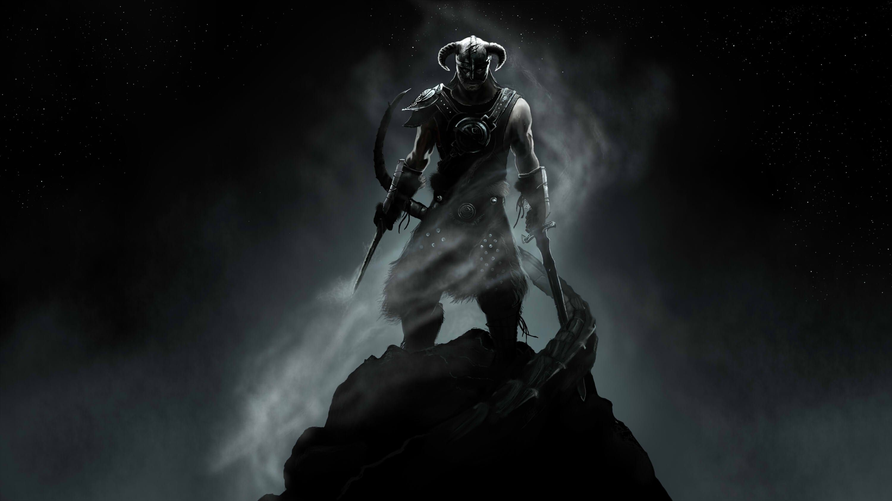
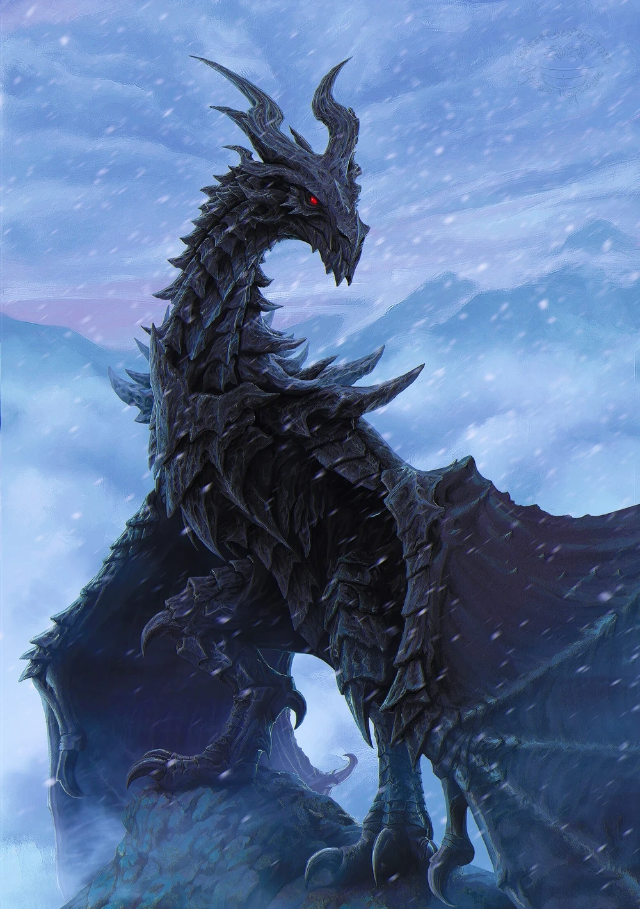
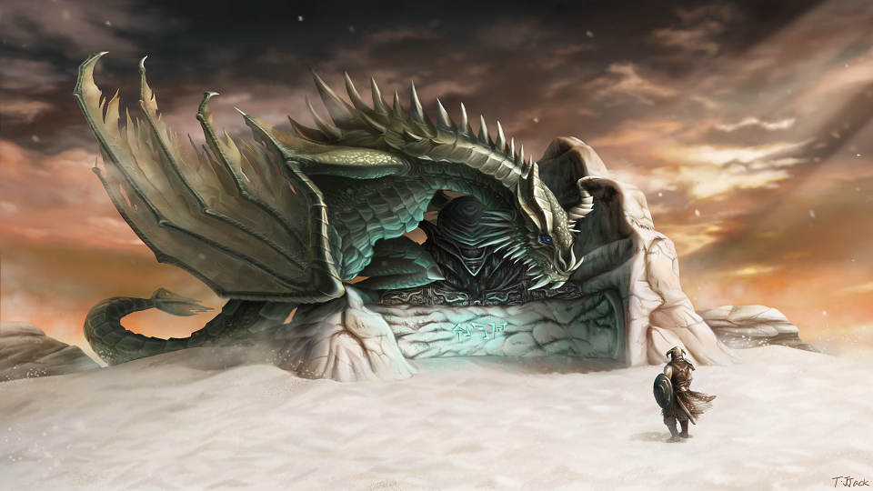
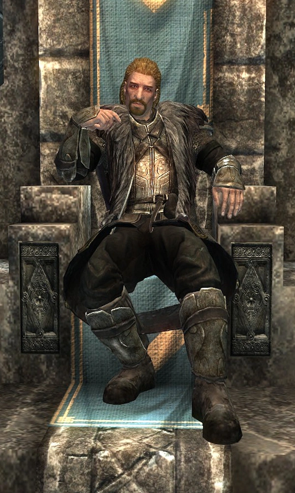
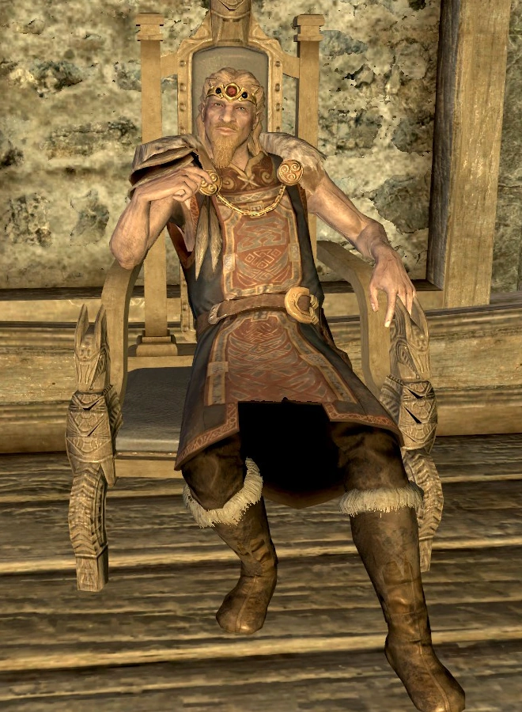
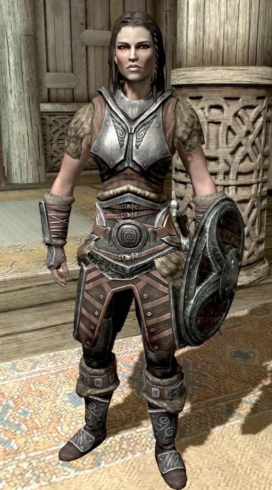
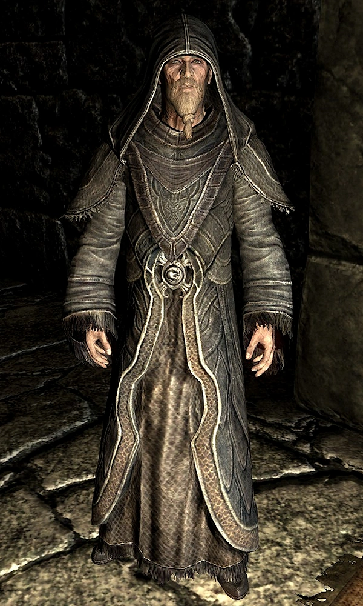

| Images | Name | Summary |
|---|---|---|
 | N/A Dragonborn(Player) | The Dragonborn (Dovahkiin) in Skyrim is a mortal gifted with the blood and soul of a dragon, prophesied to stop Alduin the World-Eater. As the "Last Dragonborn," they can permanently slay dragons by absorbing their souls to learn the Thu'um (shouts) instantly, without years of training. The character is a blank slate, usually starting as a mysterious prisoner in the 4th Era, allowing players to define their race, skills, and background before fulfilling their destiny. |
 | Alduin | Alduin, the "World-Eater," is the primary antagonist and as a primordial force, he is destined to consume the world to end one "kalpa" (age) and allow the next to begin, but he betrayed this purpose to rule as a tyrant over humanity, leading to his eventual banishment and return. |
 | Paarthurnax | Paarthurnax is an ancient, wise dragon in Skyrim who serves as the leader of the Greybeards atop the Throat of the World. Formerly Alduin's lieutenant during the Merethic Era, he betrayed his brother to teach humanity the Thu'um (Voice), enabling the defeat of the dragons. He overcomes his innate violent nature through meditation on the Way of the Voice. |
 | Ulfric Stormcloak | Ulfric Stormcloak is the Jarl of Windhelm and leader of the Stormcloak rebellion in Skyrim, fighting to make Skyrim an independent nation free from the Aldmeri Dominion-controlled Empire. A former Greybeard trainee and war hero, he was captured by the Thalmor during the Great War, later breaking free to start a civil war after killing High King Torygg with the Thu'um (Voice). |
 | Jarl Balgruuf the Greater | Jarl Balgruuf the Greater is the respected, neutral Nord ruler of Whiterun in the year (4E 201) of Skyrim. He is known for prioritizing his citizens' safety over the Civil War. A descendant of King Olaf One-Eye, he maintains a long-standing rivalry with Ulfric Stormcloak, ultimately siding with the Empire to protect his city |
 | Lydia | Lydia is one of the most iconic followers in Skyrim, acting as a Nord housecarl assigned to the player. She is renowned for her loyalty, her role as a tanky, melee-focused companion, and her often-quoted, somewhat begrudging line, "I am sworn to carry your burdens". |
 | Arngeir | Arngeir is a Nord Greybeard Elder and the primary speaker for the order at High Hrothgar in Skyrim. As the right hand of Grandmaster Paarthurnax, he mentors the Dragonborn in the Way of the Voice. He is unique among his silent brethren for having sufficient control over his Thu'um (voice) to speak without causing destruction, acting as the bridge between the monks and the outside world. |